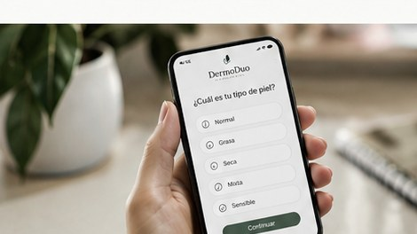

01
Demasiadas tendencias
Elegir productos solo porque se hicieron virales no siempre responde a las necesidades reales de cada piel.
Unimos cuidado dermocosmético y belleza ligera para ayudarte a elegir mejor, simplificar tu rutina y sentirte bien en tu propia piel.
Las tendencias pueden confundir. DermoDuo propone una experiencia digital más clara, guiada y accesible para tomar decisiones de cuidado personal.
Elegir productos solo porque se hicieron virales no siempre responde a las necesidades reales de cada piel.
La falta de orientación puede llevar a combinar productos inadecuados o gastar en soluciones que no se necesitan.
Creemos que el cuidado personal debe ser sencillo, comprensible y pensado para personas de todos los géneros.
DermoDuo combina la idea de tratamiento y belleza ligera en una experiencia digital que acompaña al cliente desde la orientación inicial hasta el seguimiento posterior a la compra.
Explorar soluciones ↗
Encuesta de mercado · 3 minutosQueremos entender hábitos, preferencias y expectativas de personas interesadas en el cuidado de la piel. Tus respuestas son anónimas en esta demostración y se usan para mostrar tendencias de interés del público.
La encuesta ayuda a validar la idea de negocio, priorizar características y conocer qué motiva una compra. No es una evaluación médica.
No ingreses datos personales sensibles. Puedes abandonar la encuesta en cualquier momento.
Conceptos iniciales que representan la propuesta de la marca. Los productos, fórmulas, disponibilidad y precios se encuentran en etapa de validación.
Concepto de cuidado facial diario para acompañar una rutina simple y constante.
Rutina esencialConcepto híbrido que combina una apariencia natural con el enfoque de cuidado personal.
Skin + BeautyKit de rutina pensado para facilitar la elección de productos y elevar la conveniencia.
Solución combinadaEste panel permite observar eventos registrados en este navegador: visitas, secciones consultadas, interacciones con productos, avance de la encuesta y clics de interés. Es una demostración práctica de cómo una marca puede analizar su experiencia digital.
Datos de demostración en este navegador · se actualizan al interactuar con la página
Secciones vistas durante esta navegación. Una sección cuenta cuando entra en pantalla.
Permite identificar en qué parte las personas dejan de responder.
Registra cuando una persona pulsa una tarjeta del catálogo.
Últimos eventos registrados en este navegador.
Distribución local de las respuestas completadas. No representa una muestra de mercado hasta que se recolecten respuestas reales de múltiples visitantes.
Limitación importante: estos datos se almacenan localmente en el navegador y no se envían a un servidor. Sirven para demostrar la interacción en una exposición, pero no consolidan automáticamente la actividad de diferentes usuarios o dispositivos. Para medir el mercado real, publica la web y conecta una herramienta como Google Analytics 4 con eventos de encuesta, navegación y clics. No se recopilan nombres, correos ni respuestas médicas.
Estamos validando esta propuesta. Si te interesa conocer novedades de DermoDuo, contáctanos o comparte qué te gustaría encontrar en una experiencia de cuidado facial.
Este botón registra una interacción de demostración; no envía datos ni suscribe automáticamente a una lista.
Correo
dermodou@email.com
Instagram
@dermodou
Teléfono
315 325 7852
DermoDuo es una propuesta de emprendimiento en etapa inicial. La información del sitio presenta el concepto del proyecto y no constituye consejo médico.